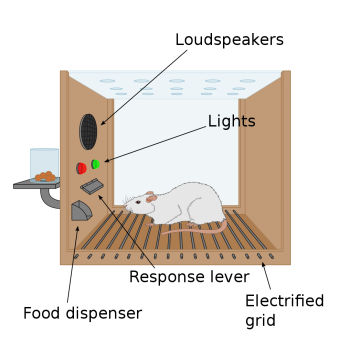
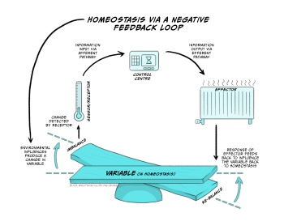
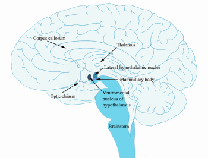
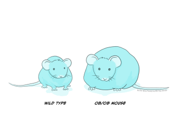
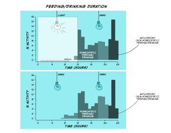
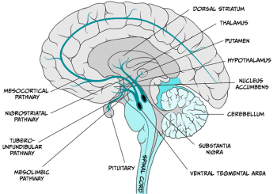

Motivated behaviour: nutrition and feeding
Learning Objectives
By the end of the chapter you will understand the processes involved in:
- basic mechanics of homeostatic system, including temperature regulation
- mechanisms in brain, body including gut, involved in drinking and feeding
- how homeostatic mechanisms that regulate physiological variables around a set-point, can deregulate to vary away from a set-point, including learning mechanisms, and more complex ones involving desire and hedonics.
Why do we get up in the morning? This may be an oft-heard question about the causation of our action, but why do we get up in the morning?
A complex causal chain of events drives the ‘getting up’ behaviour: basic physiological regulatory mechanisms involving brain stem nuclei and hypothalamic photosensors involved in regulating our circadian wake-sleep rhythm; gut hormonal mechanisms that interact again at the level of hypothalamic nuclei signalling hunger and our need or desire to eat, maternal mechanisms involving e.g. oxytocin that drive our instinct to nurse our infant child, dopaminergic forebrain mechanisms that regulate our desire for earning rewards at work (i.e., a salary), as well as more diffuse and long-term cognitive expectations about what the day, week, year and career may bring us, and so forth.
The study of motivation cuts across psychological domains to understand principal mechanisms that cause our behaviours, whether they are basic, essential regulatory behaviours such as drinking, eating/feeding, fighting and desire for sex, or more complex, psychologically-driven behaviours. We will focus principally on feeding, though will touch briefly on temperature regulation as a model regulatory physiological system that underlies motivated action, and drinking as a motivated behaviour aimed at maintaining hydration levels to ensure optimal physiological, neuronal and psychological function.
Motivation can be defined as an internal state that explains why we behave or why we learn to behave, and the study of motivation focuses on understanding what causes, drives and energises behaviour. We can therefore use terms like motivational states, motivational drives, and motivational desires to describe motivation. There are broadly two main classes of motivated behaviours: those that are ‘regulatory’ in nature and those that are ‘non-regulatory’ in nature.
We find so-called homeostatic regulatory mechanisms at the foundation of those motivated behaviours essential for basic survival needs; mechanisms that regulate our thirst (and thereby levels of (de)hydration), our sense of hunger and satiety (and in doing so, our levels of nutrients, including carbohydrates, fats, vitamins, and protein). These mechanisms encompass complex physiological mechanisms by which nutrients, water and salts are absorbed, distributed, released and excreted, but also behavioural consummatory mechanisms namely drinking and eating, and appetitive behaviours that direct us to approach locations in the environment, and then make us work for water and nutrients to consume.
But regulatory homeostatic mechanisms, as essential as they are, are only part of the story of motivation; we do not just eat because we lack nutrition, nor do we only drink when we are dehydrated. We do not just have sex to procreate, or run when we are scared. Human motivation is often not regulatory in nature, requiring explanations beyond homeostatic mechanisms. We will explore these ‘higher motivations’ that rely on a complex set of brain structures forming a ring around the thalamus in the human and non-human forebrain, described early in the history of neuroscience by Paul Broca (known also for identifying Broca’s speech production temporal lobe area), and built on throughout the years by Papez, McClean, and more recently the likes of Frederik Toates and Kent Berridge.
Considering basic regulatory mechanisms of feeding and thirst, preceded by a very brief consideration how our body (and brain) and the thermostats in our houses and offices regulate temperature requires us to consider research from early and mid last century, mostly involving American, British and western European scientists, but the field has burgeoned over the decades into a diverse and inclusive scientific community. In Box 1 we consider B. F. Skinner. A typical scientist of his generation, because he was an American (Caucasian) male professor at Harvard; but he was also atypical – or unexpected – because he was a vocal opponent of the study of motivational mechanisms and states as genuine targets of scientific inquiry by psychologists.
Motivation as a homeostatic negative-feedback mechanism
Box 1: Behaviourism and the study of motivation
One common tool used by experimental psychologists for studying motivational processes (especially in non-human animals) is the operant or instrumental conditioning chamber and was (somewhat ironically, given his opposition to the study of motivation) designed and developed by the American scientist B.F. Skinner (1904-1990), who used the chamber for his seminal studies on the experimental analysis of behaviour to show how ‘behaviour is shaped and maintained by its consequence’. If, for example, the consequence of a behaviour is generally positive because it leads to a rewarding outcome (e.g. the delivery of food for a hungry animal), or because it leads to avoiding an unpleasant outcome (e.g. the avoidance of a loud sound), then the animal will learn to repeat that behaviour, i.e. the behaviour is reinforced and the outcome of the behaviour is considered a reinforcer of the behaviour. Interestingly, however, Skinner also believed that trying to understand any internal states that may make an animal seek the reinforcing outcome more in some cases than others (e.g. seeking food when hungry vs. when satiated) distracts from understanding the effect of the reinforcing outcome or the reinforcer on behaviour, writing that ‘Mentalistic terms associated with reinforcers and with the states in which reinforcers are effective make it difficult to spot functional relations’ (B.F. Skinner, About Behaviorism, 1974).
Nevertheless, the methods that Skinner developed to study how the outcome of a behaviour affects whether the behaviour will be learned and repeated are also used today to delineate the motivation behind the execution of a behaviour.

Operant conditioning chambers (or Skinner boxes), typically contain a lever and a food/sugar-pellet dispenser cup on one side of the chamber. They also typically contain signal lights of different colours and speakers through which sound tones can be played. They may also contain an electric grid through which mild electric shocks (negative stimuli) can be delivered. Experiments involve animals learning that simple presses of the lever result in the delivery of food rewards. In other experiments, animals may learn that a tone or a particular light may signal that food becomes available in the dispenser cup.
Motivation researchers may explore the parts of the brain that are involved in the behaviour of pressing the lever for food when the animal is hungry and must alleviate this internal motivational state of hunger (i.e. regulatory motivated behaviour). In other experiments, motivation researchers may want to explore how other factors, such as learned associations between a light or a sound tone and food, may instigate pressing the lever for food even in an animal that is full, and thus explore brain regions involved in motivated behaviour that is not regulatory in nature.
Clark Hull (1884-1952) proposed that motivated behaviour is principally determined or driven by the need to alleviate an internal state of deprivation. Said simply, food reinforces a feeding behaviour if and because it alleviates a hunger state. Thus, the state of hunger is the internal state of deprivation and therefore the motivation to eat. Hull’s Drive Reduction theory (1943) emphasised the importance of maintaining homeostasis as the drive or motivation behind behaviour, and suggested that if this homeostasis, or balance in the internal environment of the organism, was taken away, this would lead to increases in arousal that would initiate action to bring back the balance. Thus the goal for an organism is to remain in homeostasis and to reduce any drives or motivations that arise from an imbalance in the system, so to reduce the arousal.
The organism can restore balance in its internal environment by acting to minimise the difference between the current state of an organism and a set point, which is the point that the organism wants to be at in order to be at equilibrium, and function optimally. In order for our body to work properly, certain variables in our body must be maintained within narrow limits. As humans, we have optimum set points for body temperature (36.5-37.5 degrees Celsius; °C). We also have optimum set points for levels of hydration and levels of different nutrients. The systems in our body that control body temperature, hydration and levels of nutrients, are homeostatic systems that bring the system towards equilibrium at particular set points. If the body’s state deviates from these set points, the homeostatic processes that control them become active so that actions and behaviours (e.g. putting a jacket on when it’s cold and body temperature drops or moving to shaded or cooler spots when it’s hot and body temperature increases), or physiological mechanisms outside our conscious control (e.g. immune responses) can be activated to restore equilibrium.
These early drive reduction views about what motivates behaviour rested on the idea of negative feedback proposed by Walter Cannon (1871 – 1945). He was a doctor and a medical researcher in the First World War, and proposed that homeostatic systems maintain balance via negative feedback. Negative feedback is a process by which the effect produced by an action serves to diminish or terminate that action. Negative feedback mechanisms are the primary way by which homeostatic systems can reduce the difference between a point the body is actually at and the ideal set point that the system wants to be at. Let’s have a look at how negative feedback processes work:

Figure 5.22 demonstrates how negative feedback loops work to maintain homeostasis.
At the bottom of the image you can see the physiological variable that must remain within narrow limits of the set point so that the balance does not tip to either one side. If we use the example of body temperature, the set point is within 36.5°C and 37.5°C, because that is normal body temperature for humans, at which our physiological processes work optimally. The system also consists of sensors or receptors. These measure what the actual body temperature is. Information about actual body temperature is typically sent to a control system that can monitor deviations from the set point. If there are deviations and the balance tips one way or the other, the control system will send this information to the effector part of the system so that correctional behaviours or physiological responses can be initiated in order to restore body temperature within the narrow margins of normal body temperature. For the control of temperature these responses may involve behaviours such as putting on or removing clothing, and physiological responses such as sweating and vasodilation of peripheral blood vessels to cool down or peripheral vasoconstriction and shivering to increase core body temperature.
This is also how the thermostat in our homes works. If the ideal/target temperature on the thermostat has been set to 21°C, and it happens to be a cold windy day, the thermostat will display the target temperature (i.e. 21°C) and an actual temperature (e.g. 18°C). Since the actual temperature on the sensor/thermostat deviates from the target, the boiler (effector) will start working, turn the radiators on, and restore the home to 21°C, at which point the boiler will switch off. This is conceptually how we think of physiological homeostatic systems in our body that use negative feedback mechanisms to restore and maintain balance to the system.
Thus, a homeostatic system, or a physiological system that depends on homeostasis, requires a system variable that is controlled by the system (e.g., temperature, hydration, nutrients), which must remain within narrow bounds of a set-point for the system to work well (e.g. 36.5-37.5°C for body temperature). Sensors (receptors) measure the actual value of the system variable, and transmit this information to a control centre, which can detect deviations from the set point. If deviations are detected, the control centre transmits this information to the effector system which initiates the necessary behavioural/physiological processes to change the system variable and restore homeostasis.
Motivation to eat/stop-eating to maintain homeostasis
Box 2: How does the body use energy, and how does it extract energy from food?
The body uses energy for three primary reasons.
The largest amount of energy that we take in through our food is used to maintain basal metabolism rates (BMR). Thus 55% of energy usage is to maintain body heat and other basic bodily functions (e.g. breathing, blood circulation). The proportion of energy used to maintain BMR varies as a function of body size. Elephants, for example, consume more energy to maintain basic functions than mice. Of this 55%, the liver uses 27% and the brain uses 19% (this includes the energy for neuronal signalling as well as basic housekeeping processes).
The digestion of food and the processes involved in extracting nutrients from food use 33% of the energy that comes in through food.
Finally, 12-13% of the energy that we take in is used as energy for active behaviour, and this percentage varies depending on the level of exercise/activity that we do. If we go to the gym, for example, we will use more than the 13%. Since only a fraction of the energy that we consume is utilised for active behaviour, while exercise is a good way to lose weight, reductions in intake are usually also necessary for weight loss. Energy which is not used for BMR maintenance, digestion, or activity, will be stored as energy reserves either in the liver (short term storage) or in fatty tissue (long term storage).
Glucose is the primary fuel or form of energy that the body uses. Glucose is derived from three main sources in our diet:
- carbohydrates (sugars),
- amino acids (building blocks of proteins), and
- lipids (fat).
Carbohydrates are broken down and converted into glucose as soon as they are taken in by the body. Glucose in turn is used as the main energy source to fuel the brain, muscles and the rest of the body. Excess glucose is stored in the form of glycogen in the liver. This is a short term storage of energy that we can use when needed through a process involving the pancreas. On detecting an increase in blood glucose, the pancreas releases insulin, which converts excess glucose into glycogen that is then stored in the liver for short term storage. If we need this energy, the pancreas secretes glucagon to convert the glycogen back to glucose so that it is then used by the body and the brain. Carbohydrates are not the only possible source of energy because proteins and fats can also be broken down to form glucose. This is the basis for many low carb diets, whereby by reducing the intake of carbohydrates, the individual will need to get their glucose from amino acids, and especially fats.
Amino acids derive from proteins, and provide the basic building blocks that cells use to make new proteins to perform the different specialised or general jobs within a given cell. However amino acids are also a source of glucose, as they can be converted to glycerol which in turn can be converted to glucose. Out of the twenty different amino acids, nine are essential, i.e. we cannot produce them in our bodies and need to take them in through our diet. For example, tryptophan is an essential amino acid and is found in oats, bananas, dried prunes, milk, tuna fish, cheese, bread, chicken, turkey, peanuts, and chocolate. It is the sole precursor of the neurotransmitter serotonin. The ability to change the rates of serotonin synthesis through the manipulation of levels of tryptophan in the body is the foundation of a large body of research examining the relationship between serotonin dysregulation and mood, behaviour, and cognition (Richard et al., 2009 for review).
Finally, lipids or fats can also be converted to glucose, but also constitute essential building blocks for our cells, forming the lipid bilayer that forms the cell membrane. Glucose can also be stored long term in fatty tissue, or adipose tissue in our body. Fats are stored in fatty or adipose tissue, or converted either into fatty acids or glycerol. Glycerol can in turn be converted into glucose for energy.
Carbohydrates are non-essential but amino acids and lipids are essential from a building block perspective, as are minerals and vitamins. Minerals and vitamins must also be taken in through our diets or via supplements; they are essential for normal body functioning, but they are not a source of energy.
If the motivation to eat or stop eating results from a need to alleviate a negative state of hunger or of feeling full respectively, it begs the questions:
- What is the system variable that needs to remain in homeostasis?
- Which sensors or receptors measure the variable?
- Is there an effector mechanism that either changes metabolic processes or that initiates or terminates the feeding behaviour so that equilibrium is restored in the system?
- If so, is the effector mechanism located in a particular part of the body, or the brain?
Since glucose is the main source of energy in the body, it would make sense that we should have a homeostatic system that regulates the amount of glucose in the body.
The notion that glucose metabolism plays a key role in the control of hunger, satiety and the regulation of body energy balance, was first proposed by Anton Julius Carlson (1916), but was later formalised into the glucostatic theory of food control by Jean Mayer (1954;1955). According to this theory, the system variable that should be maintained within narrow limits is the level of glucose concentration in the blood. Campfield and Smith (2003) recorded blood glucose concentration changes in rats over time, and found that a fall in blood glucose was correlated with meal initiation. Thus, when blood glucose concentrations decreased, the animal would begin feeding, which would result in the rise of blood glucose concentrations.
While the glucostatic theory of food control proposed that short-term appetite control or starting/stopping eating is mediated by deviations from a hypothetical blood glucose level set point, other proposals included glucose concentrations in the brain as being the key set point. In terms of long term regulation of weight, which is different from a glucose-mediated short-term control of appetite, the lipostatic theory suggested that in the long term the body is trying to maintain an optimum body fat level. These theories are not mutually exclusive, as they deal with short and long term appetite control, and might be complementary: It may be that our body is regulating multiple variables in a homeostatic way.
If deviations from optimum blood or brain concentrations of glucose elicit regulatory motivational drives to eat or to stop eating, what part of the brain or body constitutes the effector mechanism?
According to the dual centre model (Stellar, 1954), two areas in the hypothalamus, the lateral hypothalamus and the ventromedial hypothalamus, were thought to be the dedicated hunger and satiety centres, or start and stop eating centres. The lateral hypothalamus is a group of cells in the hypothalamus that are located away from the midline of the brain, while the ventromedial hypothalamus is a group of cells that are near the midline (medial) and towards the bottom (ventral) part of the hypothalamus.

The model was based on findings from lesion studies. Bilateral lesions of the ventromedial hypothalamus resulted in the animal starting to eat and put on weight (Hetherington and Ranson, 1942; Brobeck, Tepperman and Long, 1943). Thus, it was reasoned that if removal of this area results in initiating feeding behaviour, then this area must be responsible for stopping feeding. Conversely, bilateral lesions of the lateral hypothalamus resulted in the animal eating less and losing weight compared to control animals without the lesion (Hetherington and Ranson, 1940; Anand and Brobeck, 1951). Thus, if removal of the lateral hypothalamus results in less feeding, then this area must be responsible for starting to eat. More recent experiments using optogenetics to stimulate the lateral hypothalamus have shown that animals initiate eating upon stimulation of the lateral hypothalamus (Urstadt et al., 2020). The following video shows you this effect (https://www.youtube.com/watch?v=lBhYmBkqj4o):
Thus the motivation to eat/stop eating from a homeostatic perspective could be governed by these effector mechanisms located in the lateral and ventromedial hypothalamus, with the lateral hypothalamus being responsible for initiating the processes that make the animal start to eat when the animal is hungry, and the ventromedial hypothalamus being responsible for the processes that make the animal stop eating when the animal is satiated. In support of this hypothesis, research has identified receptors in the lateral hypothalamus and the liver (i.e. sensors) that measure levels of glucose so could use changes in glucose level to drive feeding.
However, further research suggested that the dual centre model may not reflect the full picture.
Research conducted by James Olds and Elliott Valenstein contradicted the idea that the lateral and ventromedial nuclei of the hypothalamus are dedicated starting and stopping eating centres. They placed animals in operant conditioning chambers and attached an electrode to their lateral hypothalamus. A lever was placed on one side of the chamber. When the animal accidentally pressed the lever, they received electric stimulation to their lateral hypothalamus. Thus, pressing the lever would result in the animal self-stimulating their lateral hypothalamus (a method known as ‘self-stimulation reward’). They observed that the animals would readily self-stimulate the lateral hypothalamus, and often to exhaustion. In some of their experimental set ups, the animals would run across a chamber where mild electric shocks were given in order to reach the lever that would allow it to self-stimulate the lateral hypothalamus. If the lateral hypothalamus is the hunger or start eating centre, why would the animals repeatedly press for stimulation that produces a hunger-like state?
In follow-up experiments, Elliot Valenstein changed the design of the studies so that only the researcher was able to administer the stimulation. They observed that similar to the optogenetics experiment mentioned above, the animal would eat upon stimulation when food was available. However, when water was available then the animal would drink. If there was an intruder in the chamber (e.g. another male rat), the animal would fight, and if there was a receptive female in the chamber the animal would mount the female. This suggested that the effects of lateral hypothalamic stimulation depend on the situation, and that therefore the lateral hypothalamus is not a dedicated hunger center, but more generally involved in motivated behaviours (including feeding).
The idea that the lateral and ventromedial hypothalamic nuclei are involved in hunger and satiety has not been rejected, but where research has moved is that maybe there are not dedicated parts of the brain but maybe there are dedicated receptors, or dedicated hormones that act on receptors. Maybe there are dedicated hunger or satiety hormones that play the role of the effector mechanism and lead to feeding or stopping feeding?
Thus, the idea of dedicated locations in the brain for hunger and satiety was revisited, following the discovery of various peptide hormones that are released predominantly in the periphery, by the gut, intestines or adipose tissue, that seemed to signal hunger or satiety.
Two peptide hormones, ghrelin and orexin, secreted from the gut (ghrelin), and from adipose tissue as well as from within the hypothalamus (orexin) not only stimulate food intake, but are also involved in wider motivational and also body clock regulatory processes.
The second set of hormones that were discovered were cholecystokinin (CCK) and Peptide YY. CCK is released from the intestines in response to the intake of fat. If hungry rats are administered CCK, feeding is inhibited. Peptide YY is released in the gut (stomach and intestines), and similarly, injections of PYY inhibit eating in hungry animals. Furthermore, there is some evidence that PYY may be abnormally low in individuals who are obese, suggesting these individuals may be less able to inhibit eating due to lack of PYY.
Leptin was discovered by researchers in Jeffrey Friedman’s lab in 1994 (Zhang et. al., 1994). The discovery of leptin was preceded by the accidental discovery of a genetic strain of mice (ob−/ob− mice) which grew to become obese, had decreased rates of basic metabolism and low physical activity. It was later concluded that their genetic mutation resulted in reduced circulation of leptin (see Figure 5.23 below). We now know that leptin is produced and released from adipose tissue (fatty tissue) and we know that it acts on several different receptors, some of which are located within the ventromedial hypothalamus to signal stopping eating. Lack of these receptors in ob–/ob– mice therefore results in overeating. Cases of congenital human leptin deficiency however are extremely rare, and while some clinical work in humans has shown that delivery of leptin in obese individuals allows them to lose weight, the clinical picture is more complicated as there is also evidence of leptin resistance (leptin doesn’t work well enough), as most obese individuals have plenty of leptin but do not respond to leptin by stopping eating.

Non-regulatory motivated behaviours: motivation not for homeostasis
We know that motivation to eat or not does not only result from the need to maintain homeostasis of nutrients in the body.
We can stimulate eating through tastes and smells even in animals that are full, and we can stimulate eating and stopping eating through learned associations. Motivation in these cases does not depend on homeostatic mechanisms. Thus, conditioned motivational drives can cause changes in appetite.
Prior to three months, babies feed to maintain homeostasis: they take large breastfeeds first thing in the morning to relieve hunger when they wake up. However, at around 3-6 months, they switch to a large feed last thing at night. This large meal anticipates the relative difficulty of obtaining night-feeds. So this is not to relieve hunger, but in anticipation of possible hunger.
This anticipatory eating behaviour has also been observed in rats (Strubbe and Woods, 2004). Rats are nocturnal animals: they eat and drink when it’s dark, and sleep during day time.

In Figure 5.25 (top panel), you can see the distribution of eating and drinking behaviours in rats when the lights in their chambers were turned on (when rats go to sleep) and when the lights in their chambers were off (when rats wake up). In the top panel, rats engage in homeostatic feeding and drinking as soon as the lights go off. Thus, rats will, similar to babies, increase their intake of food and drink as soon as the lights go off (when they wake up and start feeding/drinking). This is regulatory/homeostatic feeding and drinking. However, rats also increase their food and drink before the lights go on (when they go to sleep). This is anticipatory feeding and drinking. This behaviour, however, is not directly related to whether the lights are on or off, but rather relates to their own internal body clock (which has been entrained over time by the light and dark cycles). You can see this in the lower panel when the lights are kept switched off. Eating and drinking increases in the same way even when the rats are always in the dark.
Motivation to eat/stop eating as a result of conditioned responses
Conditioning or learning can drive feeding even when the animal is full. This is known as cue-potentiated feeding, and it has been shown in rats and in humans.
Peter Holland and researchers in his lab taught hungry rats to associate a tone with the delivery of food. This association was achieved through simple pairing of the tone with the delivery of food, similar to the experiments carried out by Ivan Pavlov. (In the classical experiments, Pavlov presented a neutral stimulus – in the original experiments, a metronome rather than a bell – immediately prior to the delivery of food [the unconditioned stimulus, UCS] to a dog. It was found that following multiple pairings of the neutral stimulus and the food, the dog eventually displayed digestive responses [salivation and gastric secretions] in the presence of the stimulus alone [conditioned stimulus, CS], before the food was delivered. Pavlovian conditioning is also briefly described in the Introducción a la psicología biológica, below Figure 1.8).
A second control cue (a different tone) was not paired with food. The researchers then allowed the rats to eat until they stopped, presumably because they were full. This ensured that the homeostatic drive to eat did not apply during the subsequent experiment. The rats were full and therefore were not motivated to eat to relieve a hunger state. The researchers then presented the tone that had been associated with the delivery of food or the tone that had been associated with no food. They found that when the rats heard the tone associated with the delivery of food they ate – this was termed cue-potentiated feeding. When rats heard the tone associated with no food they consumed less food. The researchers found that this mechanism depended on the amygdala and, more importantly, on the connection between the amygdala and the lateral hypothalamus. Severing the connection between the amygdala and the lateral hypothalamus stopped cue-potentiated feeding.
A similar experiment was undertaken with preschool students (Birch et. al., 1989). Over several training days, the researchers presented students with a rotating red light and music followed by the presentation of different snacks that the students preferred so that the students learned to associate certain light conditions and music with favourite snacks (peanut butter, hot dogs etc.). On the test day, students were allowed to eat as much as they wanted. Then the light and music changed to the lighting conditions and music associated with the training sessions. The researchers found that not only did the students consume food again, even though they were full, but also that when the light and music were the same ones as when their favourite food was available, they began eating sooner than when the light and music presented in the cafeteria had not been paired with their favourite food. Thus humans, too, exhibit cue-potentiated feeding, eating depending on the environmental cues even in the absence of a homeostatic drive to eat.
Motivation to eat/stop-eating as a result of ‘liking’ vs. ‘wanting’
Earlier in the chapter we described a series of experiments by James Olds and Elliott Valenstein which used the method of ‘self-stimulation reward’ in which rats readily pressed a lever to self-administer electric stimulation to their lateral hypothalamus. We also saw that in subsequent experiments, researcher-elicited stimulation resulted in the animals engaging in various motivated behaviours depending on the situation (eating, drinking etc.). These findings cast doubt on the prevalent idea that behaviour is motivated by drive reduction because if the drive reduction theory were true, stimulation in the same region that elicited hunger should have resulted in the animal experiencing the state of hunger, finding this state aversive and becoming motivated to behave in a way to reduce this state of deprivation. Instead, the animals self-stimulated the same region of the brain. The researchers concluded that the rats were motivated to self-stimulate because they found the self-stimulation rewarding (Valenstein et al., 1970).
Subsequent work by psychobiologists Robert C. Bolles, Dalbir Bindra, and Frederick Toates in the 1970s and 1980s allowed psychologists to abandon ‘drive reduction’ views of motivation, and paved the way for the concept of ‘incentive motivation’. Incentive motivation theories propose that behaviour is motivated by the prospect of an external reward or incentive. Thus incentive motivation is mediated by learning (consciously or unconsciously) about the availability of rewards in our environment. If a particular behaviour is expected to lead to a rewarding outcome, then we will be motivated to repeat this behaviour in order to obtain the goal of the reward (e.g. if pressing a lever will provide a sugary treat to a rat, the rat will increase the rate of pressing the lever, i.e. its motivation to execute the behaviour has increased in order to obtain the sugar reward).
Similarly, if a stimulus in the environment is expected to lead to a reward (e.g. a Pavlovian conditioned association where the sound of a bell predicts that food will be available), then motivation will increase for seeking out the stimulus that predicts the reward. Interestingly, in the Bindra-Toates model of motivation, physiological states were proposed to moderate incentive motivation, so that the value of the incentive/reward and thus also the value of the stimulus that may predict the reward can change depending on the physiological state of the animal. Thus the motivation to take a hot bath on a hot day if we are feeling cold will be higher, and the hot bath will be perceived as more pleasant and rewarding than it usually would on a hot day.
The Bindra–Toates incentive motivation model additionally suggested that rewards and incentives are liked and wanted. In addition, the learned Pavlovian stimuli that predict them also become both ‘liked’ and ‘wanted’ as a consequence of the learned association with the reward. Liking and wanting were proposed to be synonymous in the Bindra-Toates model.
However, Terry Robinson and Kent Berridge, in their incentive salience model, proposed that the incentive motivational processes of ‘liking’ and ‘wanting’ should be considered separately because these two components of reward are mediated by different brain mechanisms.
In a series of influential experiments, they dissociated the processes of ‘liking’ a reward and ‘wanting’ (or working for) a reward. ‘Liking’ was linked to the hedonic pleasure that was associated with the reward (e.g. they observed that as in babies, rats will also lick their mouth upon receiving a sweet taste). ‘Wanting’ on the other hand, or what they termed ‘incentive salience’ is the motivational value of the reward or of a stimulus that may predict the reward, and while in some cases pleasure/hedonic impact/’liking’ and ‘wanting’/motivational value of the reward may coincide to motivate behaviour (e.g. eating a cold ice cream on a hot day), in some cases they do not (e.g. eating a cold ice cream on a very cold day – here the liking will be the same, but eating a cold ice cream on a hot day to cool down might be wanted more).
Reward has long been associated with dopamine release in the mesocorticolimbic dopamine system which projects from the ventral tegmental area to the nucleus accumbens and to parts of the prefrontal cortex (see Figure 5.26).

As a result, Kent Berridge and Terry Robinson hypothesised that if dopamine in the nucleus accumbens were depleted (through selective lesioning of dopamine neurons), then rats would not seek out a reward (no ‘wanting’). This is indeed what they found. Hungry rats that lacked dopamine became aphagic and adipsic (they did not eat or drink). However if they were forced to eat something sweet, they did show licking responses associated with ‘liking’. In follow-up experiments with genetically modified mice which had high levels of dopamine in their nucleus accumbens, the researchers found that the mice would work more than control, wild type mice to obtain sucrose, but ‘liking’ responses did not differ compared to mice without the mutation. These experiments suggested that the incentives of ‘liking’ and ‘wanting’ were indeed dissociable and that ‘wanting’ was mediated, at least in part, by dopamine release in the nucleus accumbens (see Berridge and Robinson, 2016 for review).
The influential work by Ann Kelley and her colleagues in the 1990s corroborated the idea that liking and wanting incentives are likely mediated by separate systems by showing that liking may be in part be mediated by opioid receptors in the nucleus accumbens, as opioid receptor stimulation of the nucleus accumbens resulted in the enhancement of intake not of food in general but specifically in the enhancement of intake of palatable sweet or high fat foods more than other foods (Kelley et al., 1996; Zhang et al., 1998; Zhang and Kelley, 1997).
The current understanding is that motivation due to ‘liking’ is mediated by opioid, GABA and cannabinoid neurotransmitter systems in the nucleus accumbens and that motivation due to ‘wanting’ is mediated by dopamine in the nucleus accumbens.
Limbic structures involved in non-regulatory motivation
Emotions also influence motivated behaviour. We are inclined to avoid fearful situations or environments and approach situations and environments that can make us feel happy.
The amygdala, a region within the limbic system of the brain, has long been associated with both emotion and motivation, ever since it was observed that amygdala lesions in monkeys resulted in the animals showing no behavioural responses to ordinarily-threatening stimuli but that they increased exploration of familiar stimuli (as if they were unfamiliar), elicited feeding towards inedible objects such as rocks and increased sexual behaviours towards inappropriate partners such as human experimenters. This behavioural pattern is termed Klüver-Bucy syndrome and can occur in humans with medial temporal lobe damage including the amygdala.
Research is still ongoing to delineate which precise regions of the amygdala are involved in motivated behaviours but the amygdala is thought to be involved in motivational processes that involve conditioned and learned associations between environmental cues and rewarding or aversive outcomes.
Key Takeaways
- Basic physiology of motivation involves homeostatic (negative feedback) mechanisms that maintain temperature, hydration, nutrient levels around set-point
- Hypothalamic areas critical in homeostatic regulation
- Non-homeostatic influences through learning, emotion etc. dependent on limbic systems.
References
Anand, B. K., & Brobeck, J. R. (1951). Hypothalamic control of food intake in rats and cats. The Yale Journal of Biology and Medicine, 24(2), 123-140. https://www.ncbi.nlm.nih.gov/pmc/articles/PMC2599116/
Berridge, K. C., & Robinson, T. E. (2016). Liking, wanting, and the incentive-sensitization theory of addiction. American Psychologist, 71(8), 670–679. https://doi.org/10.1037/amp0000059
Birch, L. L., McPhee, L., Sullivan, S., & Johnson, S. (1989). Conditioned meal initiation in young children. Appetite, 13(2), 105–113. https://doi.org/10.1016/0195-6663(89)90108-6
Brobeck, J. R., Tepperman, J., & Long, C. N. H. (1943). Experimental hypothalamic hyperphagia in the albino rat. The Yale Journal of Biology and Medicine, 15(6), 831. https://www.ncbi.nlm.nih.gov/pmc/articles/PMC2601393/
Campfield, L. A., & Smith, F. J. (2003). Blood glucose dynamics and control of meal initiation: A pattern detection and recognition theory. Physiological Reviews, 83(1), 25–58. https://doi.org/10.1152/PHYSREV.00019.2002
Carlson, A. J. (1916). The control of hunger in health and disease. (1st ed.). Chicago: University of Chicago Press.
Hetherington, A. W., & Ranson, S. W. (1940). Hypothalamic lesions and adiposity in the rat. The Anatomical Record, 78(2), 149–172. https://doi.org/10.1002/AR.1090780203
Hetherington, A. W., & Ranson, S. W. (1942). The spontaneous activity and food intake of rats with hypothalamic lesions. 136(4), 609–617. https://doi.org/10.1152/AJPLEGACY.1942.136.4.609
Hull, C. L. (1943). Principles of behavior, an introduction to behavior theory. Appleton-Century-Crofts.
Kelley, A. E., Bless, E. P., & Swanson, C. J. (1996). Investigation of the effects of opiate antagonists infused into the nucleus accumbens on feeding and sucrose drinking in rats. Journal of Pharmacology and Experimental Therapeutics, 278(3), 1499–1507.
Mayer, J. (1953). Glucostatic mechanism of regulation of food intake. The New England Journal of Medicine, 249(1), 13–16. https://doi.org/10.1056/NEJM195307022490104
Mayer, J. (1955). Regulation of energy intake and the body weight: the glucostatic theory and the lipostatic hypothesis. Annals of the New York Academy of Sciences, 63(1), 15–43. https://doi.org/10.1111/J.1749-6632.1955.TB36543.X
Richard, D. M., Dawes, M. A., Mathias, C. W., Acheson, A., Hill-Kapturczak, N., & Dougherty, D. M. (2009). L-Tryptophan: Basic metabolic functions, behavioral research and therapeutic indications. International Journal of Trytophan Research, 2(1), 45. https://doi.org/10.4137/IJTR.S2129
Skinner, B. F. (1974). About behaviorism (1st ed.). New York: Knopf.
Stellar, E. (1954). The physiology of motivation. Psychological Review, 61(1), 5–22. https://doi.org/10.1037/H0060347
Strubbe, J. H., & Woods, S. C. (2004). The timing of meals. Psychological Review, 111(1), 128–141. https://doi.org/10.1037/0033-295X.111.1.128
Urstadt, K. R., & Berridge, K. C. (2020). Optogenetic mapping of feeding and self-stimulation within the lateral hypothalamus of the rat. PLOS ONE, 15(1), e0224301. https://doi.org/10.1371/journal.pone.0224301
Valenstein, E. S., Cox, V. C., & Kakolewski, J. W. (1970). Reexamination of the role of the hypothalamus in motivation. Psychological Review, 77(1), 16–31. https://doi.org/10.1037/H0028581
Zhang, M., Gosnell, B. A., & Kelley, A. E. (1998). Intake of high-fat food is selectively enhanced by Mu opioid receptor stimulation within the nucleus accumbens. Journal of Pharmacology and Experimental Therapeutics, 285(2), 908–914.
Zhang, M., & Kelley, A. E. (1997). Opiate agonists microinjected into the nucleus accumbens enhance sucrose drinking in rats. Psychopharmacology, 132(4), 350–360. https://doi.org/10.1007/S002130050355
Zhang, Y., Proenca, R., Maffei, M., Barone, M., Leopold, L., & Friedman, J. M. (1994). Positional cloning of the mouse obese gene and its human homologue. Nature, 372(6505), 425–432. https://doi.org/10.1038/372425a0